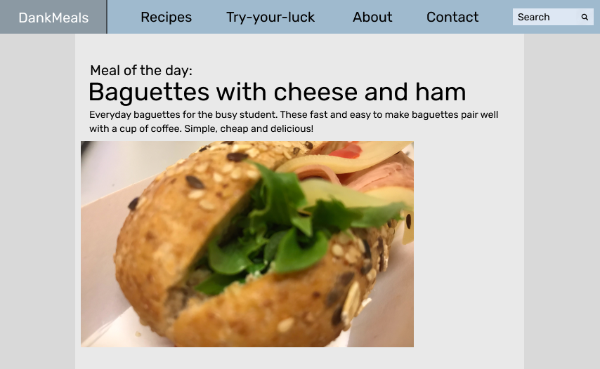
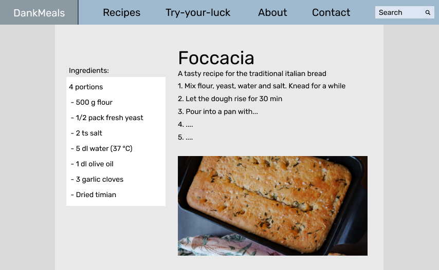

Content
What follows is a list of all the pages that will be implemented in the website. The content of each page will be explained.
Each page will have a banner along the top of the page where it will be possible to navigate to other pages.
-
The homepage
The homepage is the first page the users sees upon entering the website. This page will contain a "Meal of the Day" with an image of the meal, and an internal link to the recipe for that meal. A mockup of the page is shown in Figure 2. The size of the image is 475x300px, and has a margin of 18px from the body. The name of the meal is a clickable link, which leads to the recipe. The recipe changes every day, where the possible recipes are the ones that exist on the web-page. They are looped through, so that they will repeat after all have been shown.
Since the goal of the website is to get students to do more cooking at home while maintaining a busy schedule, the homepage should not be too cluttered or contain too much content. We opted for a minimalistic and clean homepage to make it as accessible as possible.
Figure 2: Mockup of home page
-
About us
The page about us will quite simply be about us, the project and its goals. A mockup of this page is shown in Figure 3.
The backstory of the project as well as its long-term goal, the different people involved and donors will all be included on this page. While the page itself will maintain a simple and clean look, there will be a significant amount of content on this pages compared to the homepage.

Figure 3: Mockup of about us page
-
Contact
This page contains a form users can fill out in order to contact us. A mockup of the page is shown in Figure 4. The form elements are three text fields. There will be rules to forbid submitting with an empty field. After submission the user will get an alert saying "Submission recieved".

Figure 4: Mockup of contact page
-
Recipes
The page for recipes will contain links to the three different recipe "repositories", as well as a link to a contact form where users will be able to send in suggestions for recipes. A mockup of this page is shown in Figure 6. Below the links to the "repositories" are images showing examples from related food. These images (which there are three of), are 200x200px. The links plus images will be places on the page such that they have equal amount of empty space between them.

Figure 6: Mockup of recipes page
-
Recipe example
The recipe pages will contain a white box which contains the ingredients. The height of the box fits the text of the ingredients. The width is 250px. The other part of the page is shifted to the right. An image of the finished meal will be 500px wide (the height can depend on the image's ratio). A mockup of this is shown in Figure 6. Inside the white box containing the ingredients, there will also be a text field where the user can enter how many persons the recipe should be for (4 is default).
The box with the ingredients should stay fixed on the page, even if one has to scroll down due to lengthy instructions.
Figure 6: Mockup of recipe example
-
Recipe sub-pages
The recipe sub-pages (which there are three of) will all have the same structure and design. They will contain a list of all the relevant recipes, with three recipe links on each row. Each item in the list will have the name of the meal, and image of the finished meal. The entire box, which contains the name and image, will be a link to the recipe. A mockup of this is shown in Figure 7.
Each box will have a height of 200px and a width of 170px. The font size of the name of the recipe will be 14pt. The images of the recipes within the box will be 160x100px (to make room for the name of the recipe). The border color, as well as the font color, of the box that is hoved over will change from black to blue (#9FBACE), as shown in Figure 7 (for the recipe in the middle, top row) .

Figure 7: Mockup of recipe subpage
-
Suggestion form
The suggestion form page will be structured quite similarly to the contact page, but will also include the text fields name of the meal, serving size, ingredient and instructions. The user can only fill one ingredient per field, but can add additional fields by pressing a button if needed. Also here the user will have to have entered text to be able to submitt. A mockup is shown in Figure 8. When the user submitts, an alert will appear saying "Submission recieved".

Figure 8: Mockup of suggestion form
-
Try-your-luck
The "try-your-luck" page will be centered around one mechanic: generating random meals/drinks by pairing random ingredients together. The users will be able to select either meals or drinks as the subject of the mechanic. The idea of this page is to both encourage the users to experiment more on their own and to humor them with possibly strange meals or drinks.
The red big button is supposed to be centre of attention at this site and should therefore occupy some space. The height and width of the button will be set to 350px each, with 20px margins and paddings. A mockup of this is shown in Figure 9. If meal is selected as the type to generate for, the box surrounding it has a color of #A4A3A3, while if it is not selected it has a color of #D9D9D9. When hovered the padding of the button should change colour from the color of the background to grey (for a shadow-like effect), and when pushed the user will hear a short sound.

Figure 9: Mockup of try-your-luck before button press.
There will be text fields (read-only), each of which will contain an ingredient once the meal or drink has been randomly generated. For the generating meal there will be three text fields, and for generating drinks there will be two text fiels. This will be accomplished by simple javascript code and a predefined list of ingredients and a few rules for what cannot be combined. A mockup of the page after pressing the button is shown in Figure 10.
Figure 10: Mockup of try-your-luck after button press